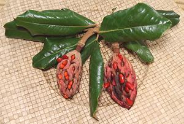
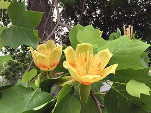

Magnolias are a very ancient line and are thought to be the first fully developed flowering land plants from which all others descend. The flowering plants we depend on for food and flavorings were formerly given the name Magnoliophyta, but in the era of the AGP they have been renamed to Angiosperms.
The Magnolias themselves are noted mainly for popular decorative flowering trees. Some also provide high quality wood, and medicinals, but culinary usage is very local. There are at least 254 species in this genus.
More on Magnoliids.
 The photo to the left is of mature Magnolia Fruits (M. grandiflora) that have developed from the central spike in the flowers. The fruit is very hard, and the central flower spike that develops into the fruit is also quite hard. The Magnolias developed long before there were bees, and depended on beetles for fertilization. The beetles were much more interested in eating the flowers than fertilizing them, so the flowers had to be tough. The photo specimen was picked up after a wind storm in Los Angeles, California.
 [Genus Liriodendron of Family Magnoliaceae]
The Tulip Tree flowers are structured just like the Magnolia flowers, with a
similar central spike that develops into the fruit. To the best of my
knowledge no part of the Tulip Tree is eaten, but the fine grained wood is
quite liked and sold as "Yellow Poplar". The photo was taken in New Jersey,
USA where Tulip Trees are native, but they have been introduced as far as
Oregon.
Photo by Famartin distributed under license Creative Commons
Attribution-ShareAlike v4.0 International.